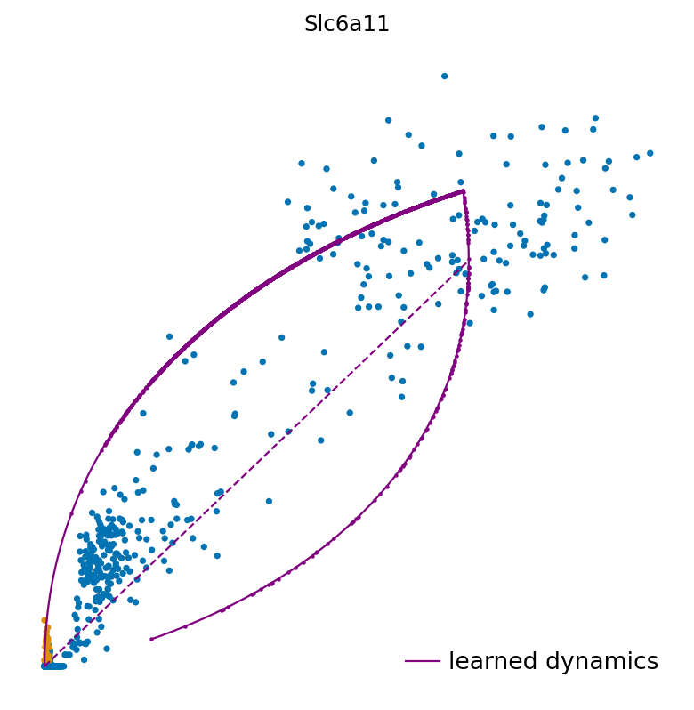

Imports and helper functions#
import os
import sys
import numpy as np
import pandas as pd
import torch
from scipy import stats
from sklearn.preprocessing import MinMaxScaler
import joypy
import matplotlib.pyplot as plt
import mplscience
import seaborn as sns
import scanpy as sc
import scvelo as scv
import scvi
from scvelo.plotting.simulation import compute_dynamics
from velovi import VELOVI
sys.path.append("../..")
from paths import DATA_DIR, FIG_DIR
Global seed set to 0
General settings#
scvi.settings.dl_pin_memory_gpu_training = False
sns.reset_defaults()
sns.reset_orig()
scv.settings.set_figure_params('scvelo', dpi_save=400, dpi=80, transparent=True, fontsize=20, color_map='viridis')
SAVE_FIGURES = True
if SAVE_FIGURES:
os.makedirs(FIG_DIR / 'permutation' / 'old_brain', exist_ok=True)
Function definitions#
def fit_velovi(bdata):
VELOVI.setup_anndata(bdata, spliced_layer="Ms", unspliced_layer="Mu")
vae = VELOVI(bdata)
vae.train()
df = vae.history["elbo_train"].iloc[20:].reset_index().rename(columns={'elbo_train': 'elbo'})
df['set'] = 'train'
_df = vae.history["elbo_validation"].iloc[20:].reset_index().rename(columns={'elbo_validation': 'elbo'})
_df['set'] = 'validation'
df = pd.concat([df, _df], axis=0).reset_index(drop=True)
with mplscience.style_context():
sns.set_style(style="whitegrid")
fig, ax = plt.subplots(figsize=(6, 4))
sns.lineplot(data=df, x='epoch', y='elbo', hue='set', palette=['#0173B2', '#DE8F05'], ax=ax)
latent_time = vae.get_latent_time(n_samples=25)
velocities = vae.get_velocity(n_samples=25, velo_statistic="mean")
t = latent_time
scaling = 20 / t.max(0)
bdata.layers["velocities_velovi"] = velocities / scaling
bdata.layers["latent_time_velovi"] = latent_time
bdata.var["fit_alpha"] = vae.get_rates()["alpha"] / scaling
bdata.var["fit_beta"] = vae.get_rates()["beta"] / scaling
bdata.var["fit_gamma"] = vae.get_rates()["gamma"] / scaling
bdata.var["fit_t_"] = (
torch.nn.functional.softplus(vae.module.switch_time_unconstr)
.detach()
.cpu()
.numpy()
) * scaling
bdata.layers["fit_t"] = latent_time.values * scaling[np.newaxis, :]
bdata.var['fit_scaling'] = 1.0
return vae
def shuffle_layer_celltype(adata, labels_key: str, layer: str = "Mu"):
bdata = adata.copy()
labels = bdata.obs[labels_key]
unspliced = bdata.layers[layer]
for l in np.unique(labels):
mask = np.asarray(labels == l)
unspliced_ct = unspliced[mask].copy()
for g in range(unspliced.shape[1]):
unspliced_ct[:, g] = np.random.permutation(unspliced_ct[:, g])
bdata.layers[layer][mask] = unspliced_ct
return bdata
def plot_phase_portrait(adata, gene, color, permuted=False, figsize=(6, 6)):
fig, ax = plt.subplots(figsize=figsize)
df = pd.DataFrame(
{
'unspliced': adata[:, gene].layers['Mu'].squeeze().copy(),
'spliced': adata[:, gene].layers['Ms'].squeeze().copy(),
'color': color
}
)
with mplscience.style_context():
sns.scatterplot(data=df, x='spliced', y='unspliced', c=color, s=25, ax=ax);
_, unspliced, spliced = compute_dynamics(adata, basis=gene, extrapolate=True, sort=True)
df = pd.DataFrame(
{
'unspliced': unspliced.squeeze(),
'spliced': spliced.squeeze(),
}
)
ax.plot(spliced, unspliced, color="purple", linewidth=2)
spliced_steady_state = np.linspace(np.min(spliced), np.max(spliced))
unspliced_steady_state = adata.var.loc[gene, 'fit_gamma'] / adata.var.loc[gene, 'fit_beta'] * (spliced_steady_state - np.min(spliced_steady_state)) + np.min(unspliced)
ax.plot(spliced_steady_state, unspliced_steady_state, color='purple', linestyle="--", linewidth=2);
ax.axis('off')
if SAVE_FIGURES:
if permuted:
fname = f'phase_portrait_{gene}_permuted'
else:
fname = f'phase_portrait_{gene}'
fig.savefig(
FIG_DIR / 'permutation' / 'old_brain' / f'{fname}.svg',
format="svg",
transparent=True,
bbox_inches='tight'
)
def plot_perm_scores(adata, perm_scores, gene, color_label, figsize=(6, 4)):
df = pd.DataFrame(perm_scores.loc[gene])
df["Cell type"] = df.index
order = adata.obs[color_label].cat.categories.tolist()
with mplscience.style_context():
sns.set_style(style="whitegrid")
fig, ax = plt.subplots(figsize=figsize)
sns.barplot(
data=df,
y=gene,
x="Cell type",
palette=adata.uns[f"{color_label}_colors"],
order=order,
ax=ax,
)
if SAVE_FIGURES:
fig.savefig(
FIG_DIR / 'permutation' / 'old_brain' / f'permutation_score_{gene}.svg',
format="svg",
transparent=True,
bbox_inches='tight'
)
Data loading#
adata = sc.read(DATA_DIR / "old_brain" / "old_brain.h5ad")
adata
AnnData object with n_obs n_vars = 1823 54143
obs: 'cell_index', 'clusters_coarse', 'clusters', 'NAME', 'nGene', 'nUMI', 'animal_type', 'cell_type_age'
layers: 'spliced', 'unspliced'
Data preprocessing#
scv.pp.filter_and_normalize(adata, min_shared_counts=20, n_top_genes=2000)
scv.pp.moments(adata, n_pcs=30, n_neighbors=30)
scaler = MinMaxScaler()
adata.layers["Mu"] = scaler.fit_transform(adata.layers["Mu"])
scaler = MinMaxScaler()
adata.layers["Ms"] = scaler.fit_transform(adata.layers["Ms"])
Filtered out 49315 genes that are detected 20 counts (shared).
Normalized count data: X, spliced, unspliced.
Extracted 2000 highly variable genes.
Logarithmized X.
computing neighbors
finished (0:00:05) --> added
'distances' and 'connectivities', weighted adjacency matrices (adata.obsp)
computing moments based on connectivities
finished (0:00:00) --> added
'Ms' and 'Mu', moments of un/spliced abundances (adata.layers)
Model fitting#
velovi_vae = fit_velovi(adata)
/home/icb/philipp.weiler/miniconda3/envs/velovi-py39/lib/python3.9/site-packages/torch/distributed/_sharded_tensor/__init__.py:8: DeprecationWarning: torch.distributed._sharded_tensor will be deprecated, use torch.distributed._shard.sharded_tensor instead
warnings.warn(
GPU available: True, used: True
TPU available: False, using: 0 TPU cores
IPU available: False, using: 0 IPUs
LOCAL_RANK: 0 - CUDA_VISIBLE_DEVICES: [0]
Set SLURM handle signals.
Epoch 500/500: 100%|| 500/500 [01:12<00:00, 6.89it/s, loss=-7.27e+03, v_num=1]
Permutation score evaluation#
perm_scores, permuted_adata = velovi_vae.get_permutation_scores(labels_key='clusters_coarse')
INFO Input AnnData not setup with scvi-tools. attempting to transfer AnnData setup
INFO Input AnnData not setup with scvi-tools. attempting to transfer AnnData setup
full_perm_df = pd.DataFrame(columns=["Score", "Dataset"])
max_ratio = np.nanmax(perm_scores.values, axis=1)
scores = max_ratio.tolist()
dataset = ['Old brain'] * len(max_ratio)
full_perm_df["Score"] = scores
full_perm_df["Dataset"] = dataset
with mplscience.style_context():
df = pd.melt(
perm_scores.loc[
:,
adata.obs['clusters_coarse'].cat.categories[(adata.obs['clusters_coarse'].value_counts() > 1).sort_index()]
]
).rename(columns={'variable': 'Cell type', 'value': 'Test statistic'})
df.head()
with mplscience.style_context():
fig, ax = plt.subplots(figsize=(25, 3))
sns.violinplot(data=df, x='Cell type', y='Test statistic', ax=ax)
ax.tick_params(axis='x', rotation=45)
if SAVE_FIGURES:
fig.savefig(
FIG_DIR / 'permutation' / 'old_brain' / 'permutation_score_density_per_cell_type.svg',
format="svg",
transparent=True,
bbox_inches='tight',
)

adata.obs['clusters'].c
AACTCCCCAAGCCCAC ASC_Lin
AAATGCCTCGGTTAAC NEURON_Lin
AAACCTGTCGGTTCGG IMMUNE_Lin
AAAGCAACAACACCCG OLG_Lin
AAATGCCAGGCGATAC IMMUNE_Lin
...
TTTGCGCTCGCTGATA ASC_Lin
TTTGCGCAGAAGGACA ASC_Lin
TTTGGTTGTCAAAGAT VASC_Lin
TTTGGTTAGTAGGTGC OLG_Lin
TTTCCTCCATCTCCCA OLG_Lin
Name: clusters, Length: 1823, dtype: category
Categories (6, object): ['ASC_Lin', 'EPC_Lin', 'IMMUNE_Lin', 'NEURON_Lin', 'OLG_Lin', 'VASC_Lin']
df = pd.DataFrame(
perm_scores.idxmax(axis=1).value_counts(normalize=True),
columns=['Percentage']
).reset_index().rename(columns={'index': 'Cell type'}).sort_values(by='Cell type')
with mplscience.style_context():
sns.set_style(style="whitegrid")
fig, ax = plt.subplots(figsize=(25, 3))
sns.barplot(data=df, x='Cell type', y='Percentage', ax=ax)
ax.tick_params(axis='x', rotation=45)
if SAVE_FIGURES:
fig.savefig(
FIG_DIR / 'permutation' / 'old_brain' / 'percentage_of_max_statistic.svg',
format="svg",
transparent=True,
bbox_inches='tight',
)
---------------------------------------------------------------------------
KeyError Traceback (most recent call last)
Input In [24], in <cell line: 5>()
1 df = pd.DataFrame(
2 perm_scores.idxmax(axis=1).value_counts(normalize=True),
3 columns=['Percentage']
4 ).reset_index().rename(columns={'index': 'Cell type'}).sort_values(by='Cell type')
----> 5 palette = dict(zip(adata.obs['clusters'].cat.categories, adata.uns['clusters_colors']))
7 with mplscience.style_context():
8 sns.set_style(style="whitegrid")
File ~/miniconda3/envs/velovi-py39/lib/python3.9/site-packages/anndata/compat/_overloaded_dict.py:100, in OverloadedDict.__getitem__(self, key)
98 return self.overloaded[key].get()
99 else:
--> 100 return self.data[key]
KeyError: 'clusters_colors'
adata.obs['mNEUR'] = False
adata.obs.loc[adata.obs['clusters_coarse'].isin(['mNEUR']), 'mNEUR'] = True
sc.tl.umap(adata)
fig, ax = plt.subplots(figsize=(6, 4))
scv.pl.scatter(adata, basis='umap', c='mNEUR', palette=['#0173b2', '#de8f05'], title='', legend_loc=False, s=25, dpi=200, ax=ax)
if SAVE_FIGURES:
fig.savefig(
FIG_DIR / 'permutation' / 'old_brain' / 'umap.svg',
format="svg",
transparent=True,
bbox_inches='tight'
)
for gene in adata.var_names[np.argsort(scores)[-5:]]:
with mplscience.style_context():
fig, ax = plt.subplots(figsize=(6, 6))
scv.pl.scatter(adata, basis=gene, c='mNEUR', frameon=False, ncols=5, palette=['#0173b2', '#de8f05'], ax=ax)
if SAVE_FIGURES:
fig.savefig(
FIG_DIR / 'permutation' / 'old_brain' / f'phase_portrait_{gene}.svg',
format="svg",
transparent=True,
bbox_inches='tight',
)

perm_score_wo_mNEUR = perm_scores.loc[:, ~perm_scores.columns.isin(['mNEUR'])]
_full_perm_df = pd.DataFrame(columns=["Score", "Dataset"])
_max_ratio = np.nanmax(perm_score_wo_mNEUR.values, axis=1)
_scores = _max_ratio.tolist()
_dataset = ['Old brain w/o mNEUR'] * len(_max_ratio)
_full_perm_df["Score"] = _scores
_full_perm_df["Dataset"] = _dataset
df = pd.concat([full_perm_df, _full_perm_df], axis=0)
datasets = ['Old brain', 'Old brain w/o mNEUR']
palette = dict(zip(datasets, sns.color_palette('colorblind').as_hex()[5:7]))
with mplscience.style_context():
fig, axes = joypy.joyplot(
df,
by='Dataset',
color=list(palette.values()),
alpha=0.75,
labels=datasets,
x_range=[0, 18],
figsize=(6, 4),
grid='both'
)
if SAVE_FIGURES:
fig.savefig(
FIG_DIR / 'permutation' / 'old_brain' / 'permutation_score_densities_clipped_joypy.svg',
format="svg",
transparent=True,
bbox_inches='tight'
)
features = ["Skew", "Kurtosis"]
data_stats_df = pd.DataFrame(
index=datasets,
columns=features,
data=np.zeros(
(len(datasets), len(features))
)
)
for d in datasets:
score1 = df.query("Dataset == @d")["Score"]
score1 = score1[score1 <= np.percentile(score1, 99)]
data_stats_df.loc[d, "Skew"] = stats.skew(score1)
data_stats_df.loc[d, "Kurtosis"] = stats.kurtosis(score1)
data_stats_df
| Skew | Kurtosis | |
|---|---|---|
| Old brain | 0.949882 | 0.331188 |
| Old brain w/o mNEUR | 1.220034 | 1.219945 |
_df = data_stats_df.reset_index().rename(columns={'index': 'Dataset'})
g = sns.PairGrid(
_df,
x_vars=['Kurtosis', 'Skew'],
y_vars=["Dataset"],
height=4,
# aspect=1.5
)
g.map(
sns.stripplot,
size=20,
orient="h",
jitter=False,
palette=palette,
linewidth=1,
edgecolor="w"
)
titles = ['Kurtosis', 'Skew']
xlims = [(-0.5, 4.75), (0.25, 2)]
for ax, title, xlim in zip(g.axes.flat, titles, xlims):
# Set a different title for each axes
ax.set(title=title)
ax.set_xlim(xlim)
# Make the grid horizontal instead of vertical
ax.xaxis.grid(True)
ax.yaxis.grid(True)
sns.despine(left=True, bottom=True)
if SAVE_FIGURES:
g.savefig(
FIG_DIR / 'permutation' / 'old_brain' / 'permutation_density_statistics.svg',
format="svg",
transparent=True,
bbox_inches='tight',
)